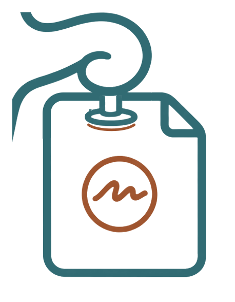
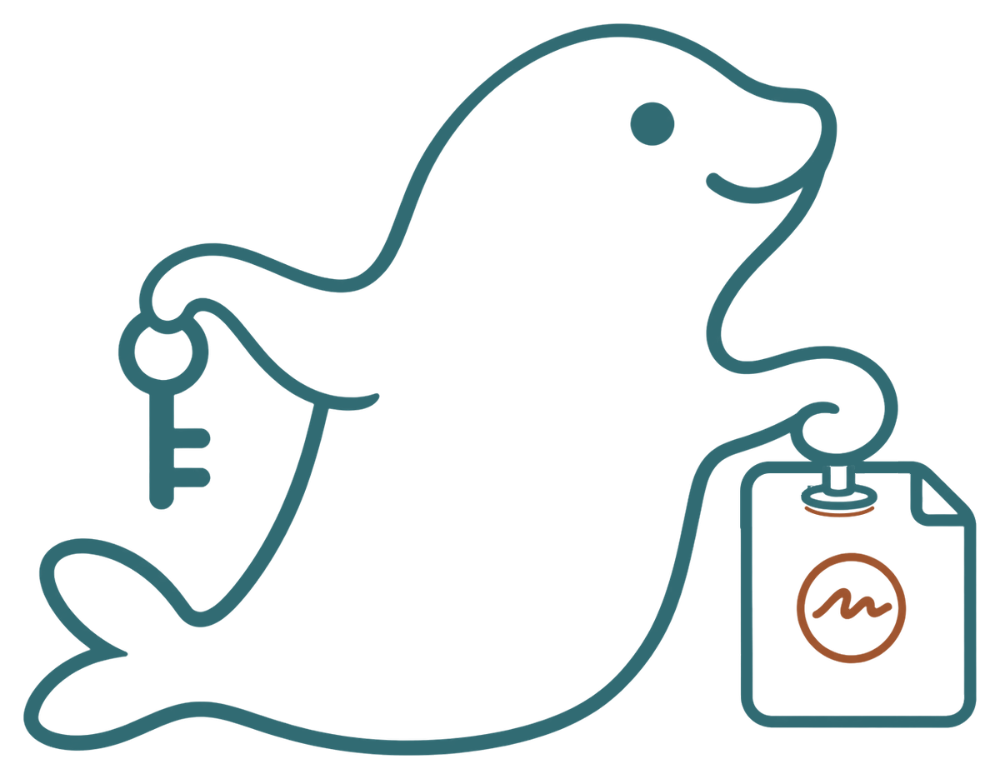
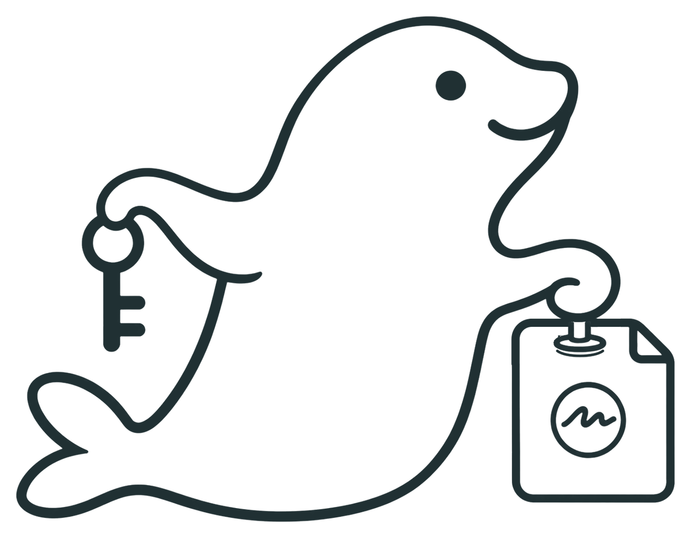
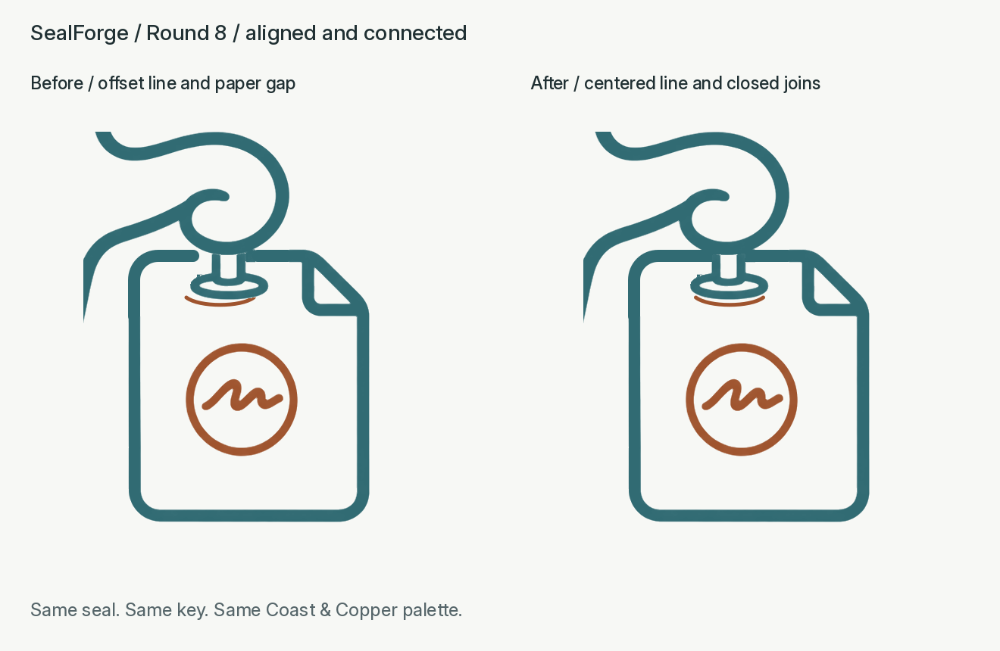

Level paper. An inked underside.

The paper edge meets both outside rails of the stem and is hidden only behind the stamp itself. The added copper line is centered on the actual press base; the original press retains its petrol ink.
ROUND 8 · PRE-FINAL REFINEMENT
The added copper line is registered to the actual press base. The paper edge now reaches both sides of the stamp without crossing its hollow stem.

Your signing workshop.
Petrol key. Petrol press.
Copper ink line. Copper imprint.

The paper edge meets both outside rails of the stem and is hidden only behind the stamp itself. The added copper line is centered on the actual press base; the original press retains its petrol ink.

The seal, key, original press, imprint, wordmark and Coast & Copper palette are retained. The key stays petrol, keeping the warm accent tied to the act of printing.
The same face, not another icon character.

The light and neutral-charcoal dark treatments are unchanged. This round is only the artwork refinement; the actual-component palette previews remain in Round 6.